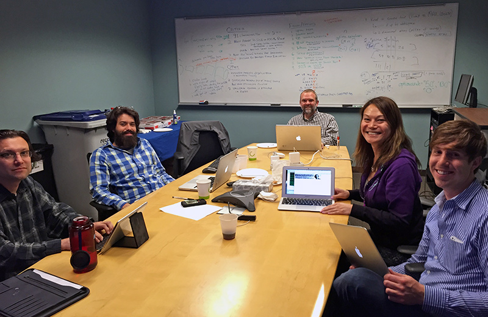

The purpose of this project is to replicate, in Javascript, the functionality of the mesostomatic poem generator written by Nicki Hoffman in Python. We also set out to add additional functionality, including the ability to create mesostics with all eligible wing words included and the ability to create mesostics that are basic, 50% or 100% mesostic-compliant.
Background
A mesostic is a poem or other typography such that a vertical phrase intersects lines of horizontal text. It is similar to an acrostic, but with the vertical phrase intersecting the middle of the line, as opposed to beginning each new line.
The practice of using index words to select pieces from a preexisting text was developed by Jackson Mac Low as "diastics". It was used extensively by the experimental composer John Cage.
There are two types of mesostic: fifty percent and one hundred percent. (See also below the example.)
Below, an example of a one-hundred-percent mesostic:
KITCHEN
let us maKe
of thIs
modesT
plaCe
a room Holding
tons of lovE
(&, Naturally, much good food, too)
It qualifies as a one-hundred-percent mesostic because there is no k or i in the text between the capital K of line 1 and the capital I of line 2 –
let us maKe
of thIs
– no i or t between the capital I and T –
of thIs
modesT
– and so on.
The team consists of 5 members of the University of Pennsylvania's School of Arts and Sciences Computing group:
